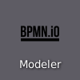

BPMN modeling exercises
Once you’ve learned the basics of BPMN, it is now time to practice. Please, open Camunda Modeler from the desktop

and choose Camunda Platform 8 BPMN diagram from its welcome screen
{kind=link}
and almost ready to begin. Just make sure that you find the following important elements from the modeler user interface:
{kind=link}
Token Simulation toggle just above the main modeling palette. Leave it off, but be ready to use it for these exercises.
Element context modeling palette, which is visible, when you select an element, like the Start event. It’s priceless for efficient modeling.
Properties panel toggle from the right side of the modeler (or on the left border of the panel when itis open). Please, keep the panel closed for these exercises.
Now you are ready to practice.
Sequence flow
Start with a simple flow with multiple
 tasks in sequence from start to end.
tasks in sequence from start to end.Toggle Token Simulation to observe, how each token flows through the process one task at time.
While on the simulator, hover on a task to toggle pause on a task.
Observe, how token stops an tasks wait waits for you to release it with play button on a task.
{kind=link}
Exclusive paths
Model a flow that splits and joins with exclusive gateways (plain diamond symbol on the palette).
Toggle Simulation to observe, how tokens choose their path on splits and joins.
While on the simulator, use switch button on the gateways to change the path.
See also, how the start event and the end event are vertically aligned with the happy path of the process. This usually makes the process easier to understand.
{kind=link}
Concurrent paths
Re-use the model from the previous exercise.
One at time, choose the exlusive gateways on your diagram and use their context modeling palettes to turn them into
 parallel gateways.
parallel gateways.Toggle Simulation to observe, how tokens multiple on splits and merge back in joins.
While on the simulator, toggle pause on tasks to observe, how joining gateways wait for all incoming paths before letting merged token to continue.
Turn the first
parallel gateway back to exclusive gateway and simulate. What happens at the joining gateways? Why?Revert the last step, and turn one of the latter
parallel gateways back to exclusive gateway and simulate. What happens now? Why?
{kind=link}
concurrent-paths-locked.bpmn
concurrent-paths-doubled.bpmn
concurrent-paths-mixed.bpmn
Multiple end-events
Re-use the model from the previous exercise.
Replace some of the joining
parallel gateways with additional end events.Toggle Simulation to observe, how the process completes only when all parallelized tokens have reached to at least some of the end events.
While on the simulator, toggle pause on tasks to observe even easier, how completion of the process is delayed, even when some tokens reach end events at their paths.
{kind=link}
Embedded sub-process
Re-use the model from the previous exercise.
Wrap some of the
tasks with an embedded subprocess by looking up expanded SubProcess from modeling palette.Toggle Simulation to ensure that your process is still integrated (all tokens reach end events and process completes).
All this should just refactor your model with an abstraction useful for the next practice. Tasks or their execution order should not change.
{kind=link}
Boundary event
Re-use the model from the previous exercise.
Allow the tasks within the embedded sub-process to be cancelled with a timeout using interrupting timer boundary event.
Add path from the boundary event to a new joining to properly merge tokens before the end event.
Toggle Simulation and toggle pause for a task within the sub-process to let you manually simulate timer event and confirm that the process is completed properly also when triggering the timeout.
Investigate, what happens, if you had used non-interrupting timer boundary event instead?
{kind=link}
More boundary events
Re-use the model from the previous exercise.
Add at least two more boundary events into the model with necessary paths and other elements. Make at least one of these to be a non-interrupting timer boundary event.
Toggle Simulation to ensure your model’s integrity. Make sure to try out your new boundary events.
{kind=link}
Warning
Be aware of a possible issue in token simulator, where multiple boundary timer events at the same element boundary don’t trigger correctly.